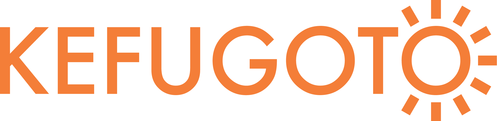

あなたの診断結果
🐢
先送りの達人タイプ
「『あとで決める』が口ぐせ」
決断疲れ度
0%
小さな決断を「あとで」に回して、気づけば未決リストが山積みになりがち。
締め切りや出発の直前になって、まとめてバタバタ片づけることも多いかも。
そもそも決める回数を減らす仕組みを持つと、毎日が軽くなるかもしれません。

小さな決断を「あとで」に回して、気づけば未決リストが山積みになりがち。
締め切りや出発の直前になって、まとめてバタバタ片づけることも多いかも。
そもそも決める回数を減らす仕組みを持つと、毎日が軽くなるかもしれません。